CODING AGENTS AS PIXEL WORLD MODELS
traex/GPT-6.1-Sol · 0156
点击播放 · 原生 RGB 像素
逐轮保存的候选
回放视频、检查图与代码变化。
每份候选均可单独播放。实际图片检查记录在下方工具轨迹中。
候选 01播放与检查图
点击播放 · 原生 RGB 像素
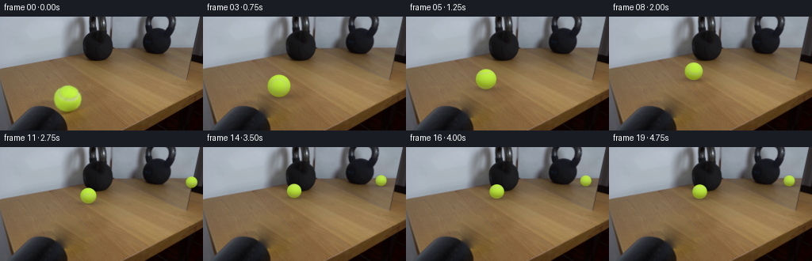
展开代码变化
--- 上一保存版本
+++ 本次保存版本
@@ -0,0 +1,117 @@
+from pathlib import Path
+import numpy as np
+import cv2
+from PIL import Image
+from scipy.sparse import lil_matrix
+from scipy.sparse.linalg import spsolve
+from artifact_io import save
+
+CASE=Path(__file__).resolve().parent
+H,W=144,256
+SS=4
+
+def background(image):
+ im=image.astype(float)
+ y,x=np.mgrid[:H,:W]
+ mask=((x-85.5)**2/20.5**2+(y-104.5)**2/19.5**2<1)|((x-88)**2/25**2+(y-122)**2/7**2<1)
+ mask &= im.mean(-1)>48
+ donor=np.roll(im,(16,-46),axis=(0,1))
+ indices=np.full((H,W),-1);indices[mask]=np.arange(mask.sum())
+ matrix=lil_matrix((mask.sum(),mask.sum()));rhs=np.zeros((mask.sum(),3))
+ for yy,xx in zip(*np.where(mask)):
+ i=indices[yy,xx];matrix[i,i]=4
+ for dy,dx in [(1,0),(-1,0),(0,1),(0,-1)]:
+ ny,nx=yy+dy,xx+dx;rhs[i]+=donor[yy,xx]-donor[ny,nx]
+ if mask[ny,nx]:matrix[i,indices[ny,nx]]=-1
+ else:rhs[i]+=im[ny,nx]
+ out=im.copy();out[mask]=spsolve(matrix.tocsr(),rhs)
+ return np.clip(out,0,255).astype(np.float32)
+
+# Pinhole table geometry inferred from the tabletop and the two kettlebell bases.
+FOCAL=197.28773145
+HORIZON=-.71428571
+
+def ground(x,y):
+ return np.array([(x-128)/(y-HORIZON),FOCAL/(y-HORIZON)])
+
+def project(q):
+ return np.array([128+FOCAL*q[0]/q[1],HORIZON+FOCAL/q[1]])
+
+start=ground(85.3,120.9)
+end=ground(114.5,63.8)
+rad=17.2*start[1]/FOCAL
+ma=ground(140,40);mb=ground(236,80)
+normal=np.array([-(mb-ma)[1],(mb-ma)[0]]);normal/=np.linalg.norm(normal)
+
+Y,X=np.mgrid[:H*SS,:W*SS].astype(float)
+X=(X+.5)/SS-.5;Y=(Y+.5)/SS-.5
+
+# The ball's pale curved seam starts with the orientation visible in the input.
+seam0=np.array([.187,.722,.666]);seam0/=np.linalg.norm(seam0)
+travel=end-start
+roll_axis=np.array([-travel[1],0,travel[0]])
+roll_axis/=np.linalg.norm(roll_axis)
+
+def rotate(v,angle):
+ return v*np.cos(angle)+np.cross(roll_axis,v)*np.sin(angle)+roll_axis*np.dot(roll_axis,v)*(1-np.cos(angle))
+
+def draw_ball(canvas,foot,r,angle,reflection=False):
+ cx,fy=foot;cy=fy-r*.977
+ dx=(X-cx)/r;dy=(cy-Y)/(r*.977)
+ rho=dx*dx+dy*dy
+ z=np.sqrt(np.clip(1-rho,0,1))
+ coverage=np.clip((1-np.sqrt(rho))*r*SS+.5,0,1)
+ n=rotate(seam0,angle)
+ d=n[0]*dx+n[1]*dy+n[2]*z
+ # Loop of stitched felt; second loop on the far hemisphere rotates into view.
+ seam=np.exp(-.5*((d-.693)/.043)**2)+np.exp(-.5*((d+.73)/.041)**2)
+ seam=np.clip(seam,0,1)[...,None]
+ light=np.clip(.24*dx+.68*dy+.69*z,0,1)
+ lower=np.clip(-dy,0,1)
+ base=np.stack([149+44*light-15*lower,182+58*light-36*lower,43+24*light-15*lower],-1)
+ pale=np.stack([156+42*light-16*lower,169+48*light-26*lower,91+34*light-12*lower],-1)
+ tex=(np.sin(65*dx+33*dy+9*z)+np.sin(94*dy-61*dx+15*z))*.8
+ color=base*(1-.90*seam)+pale*(.90*seam)+tex[...,None]
+ if reflection:
+ # Reflection is shaded identically, with slight mirror contrast loss.
+ color=color*.965+2
+ allowed=(X>=140)&(X<=256-.167*Y)&(Y<40+(X-140)*40/96)
+ else:
+ allowed=np.ones_like(X,dtype=bool)
+ # Soft ground-contact shadow, kept on the tabletop.
+ shadow=np.exp(-.5*((X-cx-1.2*r/17)/(r*.93))**2-.5*((Y-fy+.5)/(r*.19))**2)*.24
+ shadow*=allowed
+ canvas*=1-shadow[...,None]
+ alpha=(coverage*allowed)[...,None]
+ return canvas*(1-alpha)+np.clip(color,0,255)*alpha
+
+
+def main():
+ first=np.array(Image.open(CASE/'first_frame.png').convert('RGB'))
+ bg=background(first)
+ big=cv2.resize(bg,(W*SS,H*SS),interpolation=cv2.INTER_CUBIC)
+ frames=[first.copy()]
+ for i in range(1,20):
+ t=i/4
+ hit=3.5
+ if t<=hit:
+ u=t/hit;s=1.03*u-.03*u*u
+ else:
+ dt=t-hit
+ # Low restitution: a heavy stationary kettle arrests the ball.
+ s=1-.036*(1-np.exp(-3*dt))
+ q=start+(end-start)*s
+ foot=project(q);r=FOCAL*rad/q[1]
+ angle=np.linalg.norm(q-start)/rad
+ canvas=big.copy()
+ reflected=q-2*np.dot(q-ma,normal)*normal
+ rf=project(reflected);rr=FOCAL*rad/reflected[1]
+ # The ball's reflection enters the mirror as it approaches the weight.
+ canvas=draw_ball(canvas,rf,rr,-angle,True)
+ canvas=draw_ball(canvas,foot,r,angle,False)
+ frame=cv2.resize(canvas,(W,H),interpolation=cv2.INTER_AREA)
+ frames.append(np.clip(np.rint(frame),0,255).astype(np.uint8))
+ frames=np.stack(frames)
+ save(frames,CASE)
+
+if __name__=='__main__':main()
候选 02播放与检查图
点击播放 · 原生 RGB 像素

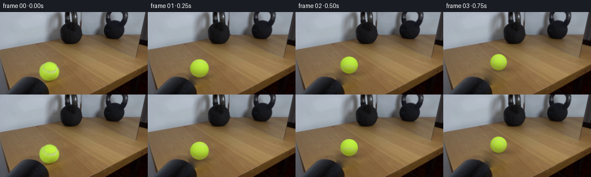
展开代码变化
--- 上一保存版本
+++ 本次保存版本
@@ -38,7 +38,7 @@
return np.array([128+FOCAL*q[0]/q[1],HORIZON+FOCAL/q[1]])
start=ground(85.3,120.9)
-end=ground(114.5,63.8)
+end=ground(114.8,62.2)
rad=17.2*start[1]/FOCAL
ma=ground(140,40);mb=ground(236,80)
normal=np.array([-(mb-ma)[1],(mb-ma)[0]]);normal/=np.linalg.norm(normal)
@@ -48,6 +48,7 @@
# The ball's pale curved seam starts with the orientation visible in the input.
seam0=np.array([.187,.722,.666]);seam0/=np.linalg.norm(seam0)
+seam_basis=np.array([[-.98855034,.14963846,-.01940486],[.06545367,.541125,.83839105],[.135956,.82752164,-.54472369]])
travel=end-start
roll_axis=np.array([-travel[1],0,travel[0]])
roll_axis/=np.linalg.norm(roll_axis)
@@ -60,15 +61,19 @@
dx=(X-cx)/r;dy=(cy-Y)/(r*.977)
rho=dx*dx+dy*dy
z=np.sqrt(np.clip(1-rho,0,1))
- coverage=np.clip((1-np.sqrt(rho))*r*SS+.5,0,1)
- n=rotate(seam0,angle)
- d=n[0]*dx+n[1]*dy+n[2]*z
- # Loop of stitched felt; second loop on the far hemisphere rotates into view.
- seam=np.exp(-.5*((d-.693)/.043)**2)+np.exp(-.5*((d+.73)/.041)**2)
- seam=np.clip(seam,0,1)[...,None]
+ # Focus softness matches the measured felt boundary in the photograph.
+ blur=.47+.32*(r/17.2)
+ coverage=.5*(1-np.tanh((np.sqrt(rho)-1)*r/(blur*.65)))
+ basis=np.column_stack([rotate(seam_basis[:,j],angle) for j in range(3)])
+ b0=basis[0,0]*dx+basis[1,0]*dy+basis[2,0]*z
+ b1=basis[0,1]*dx+basis[1,1]*dy+basis[2,1]*z
+ b2=basis[0,2]*dx+basis[1,2]*dy+basis[2,2]*z
+ theta=np.arctan2(b1,b0)
+ seam_distance=np.arcsin(np.clip(b2,-1,1))-.6284*np.cos(2*theta)
+ seam=np.exp(-.5*(seam_distance/.073)**2)[...,None]
light=np.clip(.24*dx+.68*dy+.69*z,0,1)
lower=np.clip(-dy,0,1)
- base=np.stack([149+44*light-15*lower,182+58*light-36*lower,43+24*light-15*lower],-1)
+ base=np.stack([145+49*light-22*lower,182+58*light-40*lower,41+25*light-15*lower],-1)
pale=np.stack([156+42*light-16*lower,169+48*light-26*lower,91+34*light-12*lower],-1)
tex=(np.sin(65*dx+33*dy+9*z)+np.sin(94*dy-61*dx+15*z))*.8
color=base*(1-.90*seam)+pale*(.90*seam)+tex[...,None]
@@ -80,8 +85,14 @@
allowed=np.ones_like(X,dtype=bool)
# Soft ground-contact shadow, kept on the tabletop.
shadow=np.exp(-.5*((X-cx-1.2*r/17)/(r*.93))**2-.5*((Y-fy+.5)/(r*.19))**2)*.24
+ shadow+=np.exp(-.5*((X-cx)/(r*.42))**2-.5*((Y-fy+.4)/(r*.08))**2)*.18
shadow*=allowed
canvas*=1-shadow[...,None]
+ # Lens blur applies to felt, seams and the boundary, but not to the scene.
+ sig=blur*SS*.72
+ premult=cv2.GaussianBlur((color*coverage[...,None]).astype(np.float32),(0,0),sig)
+ coverage=cv2.GaussianBlur(coverage.astype(np.float32),(0,0),sig)
+ color=premult/np.maximum(coverage[...,None],1e-7)
alpha=(coverage*allowed)[...,None]
return canvas*(1-alpha)+np.clip(color,0,255)*alpha
@@ -110,6 +121,10 @@
canvas=draw_ball(canvas,rf,rr,-angle,True)
canvas=draw_ball(canvas,foot,r,angle,False)
frame=cv2.resize(canvas,(W,H),interpolation=cv2.INTER_AREA)
+ # Keep every untouched pixel identical to the locked-off photograph.
+ untouched=np.max(np.abs(canvas-big),axis=-1)<.025
+ untouched=cv2.resize(untouched.astype(np.uint8),(W,H),interpolation=cv2.INTER_AREA)>0
+ frame[untouched]=bg[untouched]
frames.append(np.clip(np.rint(frame),0,255).astype(np.uint8))
frames=np.stack(frames)
save(frames,CASE)
候选 03播放与检查图
候选 04播放与检查图
点击播放 · 原生 RGB 像素
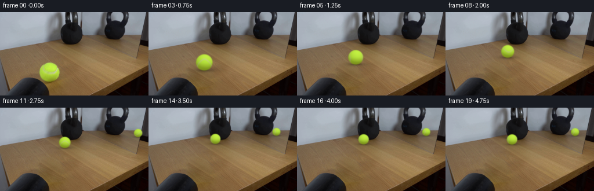
展开代码变化
--- 上一保存版本
+++ 本次保存版本
@@ -2,8 +2,6 @@
import numpy as np
import cv2
from PIL import Image
-from scipy.sparse import lil_matrix
-from scipy.sparse.linalg import spsolve
from artifact_io import save
CASE=Path(__file__).resolve().parent
@@ -16,15 +14,15 @@
mask=((x-85.5)**2/20.5**2+(y-104.5)**2/19.5**2<1)|((x-88)**2/25**2+(y-122)**2/7**2<1)
mask &= im.mean(-1)>48
donor=np.roll(im,(16,-46),axis=(0,1))
- indices=np.full((H,W),-1);indices[mask]=np.arange(mask.sum())
- matrix=lil_matrix((mask.sum(),mask.sum()));rhs=np.zeros((mask.sum(),3))
- for yy,xx in zip(*np.where(mask)):
- i=indices[yy,xx];matrix[i,i]=4
- for dy,dx in [(1,0),(-1,0),(0,1),(0,-1)]:
- ny,nx=yy+dy,xx+dx;rhs[i]+=donor[yy,xx]-donor[ny,nx]
- if mask[ny,nx]:matrix[i,indices[ny,nx]]=-1
- else:rhs[i]+=im[ny,nx]
- out=im.copy();out[mask]=spsolve(matrix.tocsr(),rhs)
+ ring=(cv2.dilate(mask.astype('uint8'),np.ones((15,15),np.uint8))>0)&~mask&(im.mean(-1)>70)
+ ring&=(x>62)&(y<134)&~((x<98)&(y>116))
+ xn=(x-85)/30;yn=(y-106)/25
+ design=np.stack([xn*0+1,xn,yn,xn*yn,xn*xn,yn*yn],-1)
+ correction=np.linalg.lstsq(design[ring],(im-donor)[ring],rcond=None)[0]
+ clean=donor+design@correction
+ alpha=cv2.GaussianBlur(mask.astype('float32'),(0,0),1.2)
+ alpha=np.maximum(alpha,mask.astype(float))*np.clip((im.mean(-1)-32)/24,0,1)
+ out=im*(1-alpha[...,None])+clean*alpha[...,None]
return np.clip(out,0,255).astype(np.float32)
# Pinhole table geometry inferred from the tabletop and the two kettlebell bases.
@@ -65,12 +63,15 @@
blur=.47+.32*(r/17.2)
coverage=.5*(1-np.tanh((np.sqrt(rho)-1)*r/(blur*.65)))
basis=np.column_stack([rotate(seam_basis[:,j],angle) for j in range(3)])
+ if reflection:
+ mn=np.array([normal[0],0,-normal[1]])
+ basis=basis-2*mn[:,None]*(mn@basis)[None,:]
b0=basis[0,0]*dx+basis[1,0]*dy+basis[2,0]*z
b1=basis[0,1]*dx+basis[1,1]*dy+basis[2,1]*z
b2=basis[0,2]*dx+basis[1,2]*dy+basis[2,2]*z
theta=np.arctan2(b1,b0)
seam_distance=np.arcsin(np.clip(b2,-1,1))-.6284*np.cos(2*theta)
- seam=np.exp(-.5*(seam_distance/.073)**2)[...,None]
+ seam=np.exp(-.5*(seam_distance/.09)**2)[...,None]
light=np.clip(.24*dx+.68*dy+.69*z,0,1)
lower=np.clip(-dy,0,1)
base=np.stack([145+49*light-22*lower,182+58*light-40*lower,41+25*light-15*lower],-1)
@@ -118,7 +119,7 @@
reflected=q-2*np.dot(q-ma,normal)*normal
rf=project(reflected);rr=FOCAL*rad/reflected[1]
# The ball's reflection enters the mirror as it approaches the weight.
- canvas=draw_ball(canvas,rf,rr,-angle,True)
+ canvas=draw_ball(canvas,rf,rr,angle,True)
canvas=draw_ball(canvas,foot,r,angle,False)
frame=cv2.resize(canvas,(W,H),interpolation=cv2.INTER_AREA)
# Keep every untouched pixel identical to the locked-off photograph.
可观测工具轨迹
实际执行的命令与返回图片。
命令 1exit 0
/bin/bash -lc "ls -la && cat prompt.txt && printf '\\n---RULES---\\n' && cat GENERATION_RULES.md"
命令 2exit 0
/bin/bash -lc "cat artifact_io.py && python - <<'PY'
from PIL import Image
im=Image.open('first_frame.png');im.resize((1024,576)).save('.tmp/enlarged.png')
PY"命令 3exit 0
/bin/bash -lc "python - <<'PY'
import importlib.util
for m in ['numpy','PIL','cv2','scipy']:
print(m, bool(importlib.util.find_spec(m)))
from PIL import Image
im=Image.open('first_frame.png');im.crop((45,65,130,138)).resize((680,584)).save('.tmp/ball_crop.png')
PY"命令 4exit 0
/bin/bash -lc "python - <<'PY' import numpy as np h0=-40; f=220; cx=128 G=lambda x,y:np.array([(x-cx)/(y-h0),f/(y-h0)]) P=lambda q:np.array([cx+f*q[0]/q[1],h0+f/q[1]]) a=G(141,40);b=G(236,80);n=np.array([-(b-a)[1],(b-a)[0]]);n/=np.linalg.norm(n) for x,y in [(125,54),(85,119),(114,72),(117,67)]: q=G(x,y);r=q-2*np.dot(q-a,n)*n;print((x,y),P(r)) PY"
命令 5exit 0
/bin/bash -lc "cat > .tmp/bgtest.py <<'PY'
import cv2,numpy as np
from PIL import Image
im=np.array(Image.open('first_frame.png').convert('RGB'))
y,x=np.mgrid[:144,:256]
mask=((x-85.5)**2/20**2+(y-104.5)**2/19**2<1)|((x-88)**2/23**2+(y-120)**2/6**2<1)
# safe avoid nearby black foreground
mask &= y < (111+0.51*(x-61))
m=(mask*255).astype('uint8')
a=cv2.inpaint(im,m,4,cv2.INPAINT_TELEA)
Image.fromarray(a).resize((1024,576)).save('.tmp/bg_inpaint.png')
# donor table shift
src=np.zeros_like(im)
src[:,:]=im
for yy in range(144):
for xx in range(256):
if mask[yy,xx]: src[yy,xx]=im[yy-16,xx+46]
b=cv2.seamlessClone(src,im,m,(85,106),cv2.NORMAL_CLONE)
# cloning entire image source relative mask bbox center? OpenCV center is bbox center"'! compute
ys,xs=np.where(mask);center=((xs.min()+xs.max())//2,(ys.min()+ys.max())//2)
b=cv2.seamlessClone(src,im,m,center,cv2.NORMAL_CLONE)
Image.fromarray(b).resize((1024,576)).save('"'.tmp/bg_clone.png')
Image.fromarray(b).save('.tmp/background.png')
PY
python .tmp/bgtest.py"命令 6exit 0
/bin/bash -lc "python - <<'PY' from scipy.optimize import least_squares import numpy as np cx=128 def refl(p,h,f): G=lambda x,y:np.array([(x-cx)/(y-h),f/(y-h)]) a=G(140,40);b=G(236,80);n=np.array([-(b-a)[1],(b-a)[0]]);n/=np.linalg.norm(n) q=G(*p);q-=2*np.dot(q-a,n)*n return np.array([cx+f*q[0]/q[1],h+f/q[1]]) r=least_squares(lambda k:refl((124,55),k[0],k[1])-[198,46],[-60,100],bounds=([-500,20],[0,1000])) print(r.x,r.fun) for p in [(85,121),(114,70),(114,71),(124,55)]: print(p,refl(p,*r.x)) PY"
命令 7exit 0
/bin/bash -lc "python - <<'PY'
import numpy as np
from PIL import Image
im=np.array(Image.open('first_frame.png'))
for yy in range(86,111):
print('%3d'%yy,''.join(' ' if not ((xx-85.4)**2+(yy-103.4)**2<16.8**2) else ('w' if (im[yy,xx,0]-im[yy,xx,2]<105 and im[yy,xx,0]>130) else '.') for xx in range(66,106)))
PY"命令 8exit 0
/bin/bash -lc "python - <<'PY' import numpy as np p=np.array([[76.4,91.8],[75.6,96.5],[78,100],[83,103],[90,104],[96,102],[100,97],[100,92]]) x=(p[:,0]-85.4)/17.3;y=(104.1-p[:,1])/16.8;z=np.sqrt(np.maximum(0,1-x*x-y*y));s=np.stack([x,y,z],-1) _,_,v=np.linalg.svd(np.column_stack([s,np.ones(len(s))]));n=v[-1,:3]; c=-v[-1,3];norm=np.linalg.norm(n);print(n/norm,c/norm) PY"
命令 9exit 0
/bin/bash -lc "python - <<'PY'
from PIL import Image
import numpy as np
im=np.array(Image.open('first_frame.png'))
for p in [(85,90),(85,95),(85,99),(85,104),(85,107),(85,110),(85,115),(75,97),(78,100),(98,101),(90,105),(100,106),(70,104),(85,119)]:
x,y=p;print(p,im[y,x])
PY"命令 10exit 0
/bin/bash -lc "cat > .tmp/poisson.py <<'PY'
import numpy as np,cv2
from PIL import Image
from scipy.sparse import lil_matrix
from scipy.sparse.linalg import spsolve
im=np.array(Image.open('first_frame.png').convert('RGB')).astype(float)
y,x=np.mgrid[:144,:256]
mask=((x-85.5)**2/20.5**2+(y-104.5)**2/19.5**2<1)|((x-88)**2/25**2+(y-122)**2/7**2<1)
mask&=im.mean(-1)>48
src=np.roll(im,(-16,46),axis=(0,1)) # this means source yy+16 xx-46; choose other
src=np.roll(im,(16,-46),axis=(0,1))
idx=np.full((144,256),-1);idx[mask]=np.arange(mask.sum())
a=lil_matrix((mask.sum(),mask.sum())); b=np.zeros((mask.sum(),3))
for yy,xx in zip(*np.where(mask)):
i=idx[yy,xx];a[i,i]=4
for dy,dx in [(1,0),(-1,0),(0,1),(0,-1)]:
ny,nx=yy+dy,xx+dx;b[i]+=src[yy,xx]-src[ny,nx]
if mask[ny,nx]:a[i,idx[ny,nx]]=-1
else:b[i]+=im[ny,nx]
out=im.copy();out[mask]=spsolve(a.tocsr(),b)
out=np.clip(out,0,255).astype('uint8')
Image.fromarray(out).save('.tmp/background.png')
Image.fromarray(out).resize((1024,576)).save('.tmp/bg_poisson.png')
PY
python .tmp/poisson.py"命令 11exit 0
/bin/bash -lc "cat > generate.py <<'PY'
from pathlib import Path
import numpy as np
import cv2
from PIL import Image
from scipy.sparse import lil_matrix
from scipy.sparse.linalg import spsolve
from artifact_io import save
CASE=Path(__file__).resolve().parent
H,W=144,256
SS=4
def background(image):
im=image.astype(float)
y,x=np.mgrid[:H,:W]
mask=((x-85.5)**2/20.5**2+(y-104.5)**2/19.5**2<1)|((x-88)**2/25**2+(y-122)**2/7**2<1)
mask &= im.mean(-1)>48
donor=np.roll(im,(16,-46),axis=(0,1))
indices=np.full((H,W),-1);indices[mask]=np.arange(mask.sum())
matrix=lil_matrix((mask.sum(),mask.sum()));rhs=np.zeros((mask.sum(),3))
for yy,xx in zip(*np.where(mask)):
i=indices[yy,xx];matrix[i,i]=4
for dy,dx in [(1,0),(-1,0),(0,1),(0,-1)]:
ny,nx=yy+dy,xx+dx;rhs[i]+=donor[yy,xx]-donor[ny,nx]
if mask[ny,nx]:matrix[i,indices[ny,nx]]=-1
else:rhs[i]+=im[ny,nx]
out=im.copy();out[mask]=spsolve(matrix.tocsr(),rhs)
return np.clip(out,0,255).astype(np.float32)
# Pinhole table geometry inferred from the tabletop and the two kettlebell bases.
FOCAL=197.28773145
HORIZON=-.71428571
def ground(x,y):
return np.array([(x-128)/(y-HORIZON),FOCAL/(y-HORIZON)])
def project(q):
return np.array([128+FOCAL*q[0]/q[1],HORIZON+FOCAL/q[1]])
start=ground(85.3,120.9)
end=ground(114.5,63.8)
rad=17.2*start[1]/FOCAL
ma=ground(140,40);mb=ground(236,80)
normal=np.array([-(mb-ma)[1],(mb-ma)[0]]);normal/=np.linalg.norm(normal)
Y,X=np.mgrid[:H*SS,:W*SS].astype(float)
X=(X+.5)/SS-.5;Y=(Y+.5)/SS-.5
# The ball's pale curved seam starts with the orientation visible in the input.
seam0=np.array([.187,.722,.666]);seam0/=np.linalg.norm(seam0)
travel=end-start
roll_axis=np.array([-travel[1],0,travel[0]])
roll_axis/=np.linalg.norm(roll_axis)
def rotate(v,angle):
return v*np.cos(angle)+np.cross(roll_axis,v)*np.sin(angle)+roll_axis*np.dot(roll_axis,v)*(1-np.cos(angle))
def draw_ball(canvas,foot,r,angle,reflection=False):
cx,fy=foot;cy=fy-r*.977
dx=(X-cx)/r;dy=(cy-Y)/(r*.977)
rho=dx*dx+dy*dy
z=np.sqrt(np.clip(1-rho,0,1))
coverage=np.clip((1-np.sqrt(rho))*r*SS+.5,0,1)
n=rotate(seam0,angle)
d=n[0]*dx+n[1]*dy+n[2]*z
# Loop of stitched felt; second loop on the far hemisphere rotates into view.
seam=np.exp(-.5*((d-.693)/.043)**2)+np.exp(-.5*((d+.73)/.041)**2)
seam=np.clip(seam,0,1)[...,None]
light=np.clip(.24*dx+.68*dy+.69*z,0,1)
lower=np.clip(-dy,0,1)
base=np.stack([149+44*light-15*lower,182+58*light-36*lower,43+24*light-15*lower],-1)
pale=np.stack([156+42*light-16*lower,169+48*light-26*lower,91+34*light-12*lower],-1)
tex=(np.sin(65*dx+33*dy+9*z)+np.sin(94*dy-61*dx+15*z))*.8
color=base*(1-.90*seam)+pale*(.90*seam)+tex[...,None]
if reflection:
# Reflection is shaded identically, with slight mirror contrast loss.
color=color*.965+2
allowed=(X>=140)&(X<=256-.167*Y)&(Y<40+(X-140)*40/96)
else:
allowed=np.ones_like(X,dtype=bool)
# Soft ground-contact shadow, kept on the tabletop.
shadow=np.exp(-.5*((X-cx-1.2*r/17)/(r*.93))**2-.5*((Y-fy+.5)/(r*.19))**2)*.24
shadow*=allowed
canvas*=1-shadow[...,None]
alpha=(coverage*allowed)[...,None]
return canvas*(1-alpha)+np.clip(color,0,255)*alpha
def main():
first=np.array(Image.open(CASE/'first_frame.png').convert('RGB'))
bg=background(first)
big=cv2.resize(bg,(W*SS,H*SS),interpolation=cv2.INTER_CUBIC)
frames=[first.copy()]
for i in range(1,20):
t=i/4
hit=3.5
if t<=hit:
u=t/hit;s=1.03*u-.03*u*u
else:
dt=t-hit
# Low restitution: a heavy stationary kettle arrests the ball.
s=1-.036*(1-np.exp(-3*dt))
q=start+(end-start)*s
foot=project(q);r=FOCAL*rad/q[1]
angle=np.linalg.norm(q-start)/rad
canvas=big.copy()
reflected=q-2*np.dot(q-ma,normal)*normal
rf=project(reflected);rr=FOCAL*rad/reflected[1]
# The ball's reflection enters the mirror as it approaches the weight.
canvas=draw_ball(canvas,rf,rr,-angle,True)
canvas=draw_ball(canvas,foot,r,angle,False)
frame=cv2.resize(canvas,(W,H),interpolation=cv2.INTER_AREA)
frames.append(np.clip(np.rint(frame),0,255).astype(np.uint8))
frames=np.stack(frames)
save(frames,CASE)
if __name__=='__main__':main()
PY
python generate.py"命令 12exit 0
/bin/bash -lc "python - <<'PY'
from PIL import Image
for i in [1,3,8,14]:Image.open(f'frames/{i:02d}.png').resize((1024,576)).save(f'.tmp/frame{i}.png')
PY"命令 13exit 0
/bin/bash -lc "python - <<'PY'
from PIL import Image
im=Image.open('first_frame.png');im.crop((55,100,118,139)).resize((756,468)).save('.tmp/shadow.png')
PY"命令 14exit 1
/bin/bash -lc "cat > .tmp/seamfit.py <<'PY' import numpy as np from scipy.spatial.transform import Rotation from scipy.optimize import least_squares pts=np.array([[76.4,91.8],[75.6,96.5],[78,100],[83,103],[90,104],[96,102],[100,97],[100,92]]) x=(pts[:,0]-85.4)/17.3;y=(104.1-pts[:,1])/16.8;z=np.sqrt(np.maximum(0,1-x*x-y*y));v=np.stack([x,y,z],-1) def f(p): rot=Rotation.from_rotvec(p[:3]).as_matrix() q=v@rot theta=np.arctan2(q[:,1],q[:,0]);return (np.arcsin(q[:,2])-p[3]*np.cos(2*theta)) best=None rng=np.random.default_rng(5) for i in range(20): r=least_squares(f,np.r_[rng.normal(size=3),.9],bounds=([-5,-5,-5,.4],[5,5,5,1.4])) if best is None or np.linalg.norm(r.fun)<np.linalg.norm(best.fun):best=r print(best.x, np.linalg.norm(best.fun),f(best.x)) print(Rotation.from_rotvec(best.x[:3]).as_matrix()) PY python .tmp/seamfit.py"
命令 15exit 0
/bin/bash -lc "sed -i 's/v=np.stack(\\[x,y,z\\],-1)/v=np.stack([x,y,z],-1);v\\/=np.linalg.norm(v,axis=1)[:,None]/;s/np.arcsin(q\\[:,2\\])/np.arcsin(np.clip(q[:,2],-1,1))/' .tmp/seamfit.py python .tmp/seamfit.py"
命令 16exit 0
/bin/bash -lc "sed -i 's/\\[76.4,91.8\\],//;s/,\\[100,92\\]//' .tmp/seamfit.py python .tmp/seamfit.py"
命令 17exit 0
/bin/bash -lc "cp generate.py .tmp/generate_v1.py
python - <<'PY'
p='generate.py'
s=open(p).read()
s=s.replace(\"end=ground(114.5,63.8)\",\"end=ground(114.8,62.2)\")
s=s.replace(\"seam0=np.array([.187,.722,.666]);seam0/=np.linalg.norm(seam0)\",\"seam0=np.array([.187,.722,.666]);seam0/=np.linalg.norm(seam0)\\nseam_basis=np.array([[-.98855034,.14963846,-.01940486],[.06545367,.541125,.83839105],[.135956,.82752164,-.54472369]])\")
a=s.index(' coverage=np.clip(');b=s.index(' light=np.clip(',a)
s=s[:a]+''' # Focus softness matches the measured felt boundary in the photograph.
blur=.47+.32*(r/17.2)
coverage=.5*(1-np.tanh((np.sqrt(rho)-1)*r/(blur*.65)))
basis=np.column_stack([rotate(seam_basis[:,j],angle) for j in range(3)])
b0=basis[0,0]*dx+basis[1,0]*dy+basis[2,0]*z
b1=basis[0,1]*dx+basis[1,1]*dy+basis[2,1]*z
b2=basis[0,2]*dx+basis[1,2]*dy+basis[2,2]*z
theta=np.arctan2(b1,b0)
seam_distance=np.arcsin(np.clip(b2,-1,1))-.6284*np.cos(2*theta)
seam=np.exp(-.5*(seam_distance/.073)**2)[...,None]
''' + s[b:]
s=s.replace('149+44*light-15*lower,182+58*light-36*lower,43+24*light-15*lower','145+49*light-22*lower,182+58*light-40*lower,41+25*light-15*lower')
s=s.replace('allowed=(X>=140)&(X<=256-.167*Y)&(Y<40+(X-140)*40/96)','allowed=(X>=140)&(X<=256-.167*Y)&(Y<40+(X-140)*40/96)')
s=s.replace('shadow*=allowed','shadow+=np.exp(-.5*((X-cx)/(r*.42))**2-.5*((Y-fy+.4)/(r*.08))**2)*.18\\n shadow*=allowed')
s=s.replace(' alpha=(coverage*allowed)[...,None]', ''' # Lens blur applies to felt, seams and the boundary, but not to the scene.
sig=blur*SS*.72
premult=cv2.GaussianBlur((color*coverage[...,None]).astype(np.float32),(0,0),sig)
coverage=cv2.GaussianBlur(coverage.astype(np.float32),(0,0),sig)
color=premult/np.maximum(coverage[...,None],1e-7)
alpha=(coverage*allowed)[...,None]''')
s=s.replace(' frame=cv2.resize(canvas,(W,H),interpolation=cv2.INTER_AREA)\\n frames.append', ''' frame=cv2.resize(canvas,(W,H),interpolation=cv2.INTER_AREA)
# Keep every untouched pixel identical to the locked-off photograph.
untouched=np.max(np.abs(canvas-big),axis=-1)<.025
untouched=cv2.resize(untouched.astype(np.uint8),(W,H),interpolation=cv2.INTER_AREA)>0
frame[untouched]=bg[untouched]
frames.append''')
open(p,'w').write(s)
PY
python generate.py"命令 18exit 0
/bin/bash -lc "cat > .tmp/bgfit.py <<'PY'
from PIL import Image
import numpy as np,cv2
im=np.array(Image.open('first_frame.png')).astype(float);y,x=np.mgrid[:144,:256]
mask=((x-85.5)**2/20.5**2+(y-104.5)**2/19.5**2<1)|((x-88)**2/25**2+(y-122)**2/7**2<1)
mask &= im.mean(-1)>48
donor=np.roll(im,(16,-46),axis=(0,1))
ring=(cv2.dilate(mask.astype('uint8'),np.ones((15,15),np.uint8))>0)&~mask&(im.mean(-1)>70)
ring&= (x>62)&(y<134)&~((x<98)&(y>116))
xn=(x-85)/30;yn=(y-106)/25
A=np.stack([xn*0+1,xn,yn,xn*yn,xn*xn,yn*yn],-1)
coef=np.linalg.lstsq(A[ring],(im-donor)[ring],rcond=None)[0]
bg=donor+A@coef
# smoothly splice at outer ellipse, preserve actual black shape
alpha=cv2.GaussianBlur(mask.astype('float32'),(0,0),1.2)
alpha=np.maximum(alpha,mask.astype(float));alpha*=im.mean(-1)>48
out=im*(1-alpha[...,None])+bg*alpha[...,None]
Image.fromarray(np.clip(out,0,255).astype('uint8')).resize((1024,576)).save('.tmp/bg_fit.png')
PY
python .tmp/bgfit.py"命令 19exit 0
/bin/bash -lc "python - <<'PY'
from PIL import Image
Image.open('frames/01.png').resize((1024,576)).save('.tmp/new1.png')
PY"命令 20exit 0
/bin/bash -lc "python - <<'PY'
from PIL import Image
Image.open('frames/03.png').resize((1024,576)).save('.tmp/new3.png')
PY"命令 21exit 0
/bin/bash -lc "cp generate.py .tmp/generate_v2.py
python - <<'PY'
p='generate.py';s=open(p).read();a=s.index('def background');b=s.index('# Pinhole',a)
s=s[:a]+'''def background(image):
im=image.astype(float)
y,x=np.mgrid[:H,:W]
mask=((x-85.5)**2/20.5**2+(y-104.5)**2/19.5**2<1)|((x-88)**2/25**2+(y-122)**2/7**2<1)
mask &= im.mean(-1)>48
donor=np.roll(im,(16,-46),axis=(0,1))
ring=(cv2.dilate(mask.astype('uint8'),np.ones((15,15),np.uint8))>0)&~mask&(im.mean(-1)>70)
ring&=(x>62)&(y<134)&~((x<98)&(y>116))
xn=(x-85)/30;yn=(y-106)/25
design=np.stack([xn*0+1,xn,yn,xn*yn,xn*xn,yn*yn],-1)
correction=np.linalg.lstsq(design[ring],(im-donor)[ring],rcond=None)[0]
clean=donor+design@correction
alpha=cv2.GaussianBlur(mask.astype('float32'),(0,0),1.2)
alpha=np.maximum(alpha,mask.astype(float))*np.clip((im.mean(-1)-32)/24,0,1)
out=im*(1-alpha[...,None])+clean*alpha[...,None]
return np.clip(out,0,255).astype(np.float32)
''' + s[b:]
s=s.replace('from scipy.sparse import lil_matrix\\nfrom scipy.sparse.linalg import spsolve\\n','')
s=s.replace(' b0=basis[0,0]', ''' if reflection:
mn=np.array([normal[0],0,-normal[1]])
basis=basis-2*mn[:,None]*(mn@basis)[None,:]
b0=basis[0,0]''')
s=s.replace('seam_distance/.073','seam_distance/.09')
s=s.replace('canvas=draw_ball(canvas,rf,rr,-angle,True)','canvas=draw_ball(canvas,rf,rr,angle,True)')
open(p,'w').write(s)
PY
python generate.py
python - <<'PY'
import numpy as np
from PIL import Image
from pathlib import Path
frames=np.stack([np.array(Image.open(p)) for p in sorted(Path('frames').glob('*.png'))])
first=np.array(Image.open('first_frame.png'))
assert frames.shape==(20,144,256,3)
assert frames.dtype==np.uint8
assert np.array_equal(frames[0],first)
print('Validated: 20 RGB frames, 256x144, first frame pixel-identical.')
PY"视觉工具实际返回图片 1
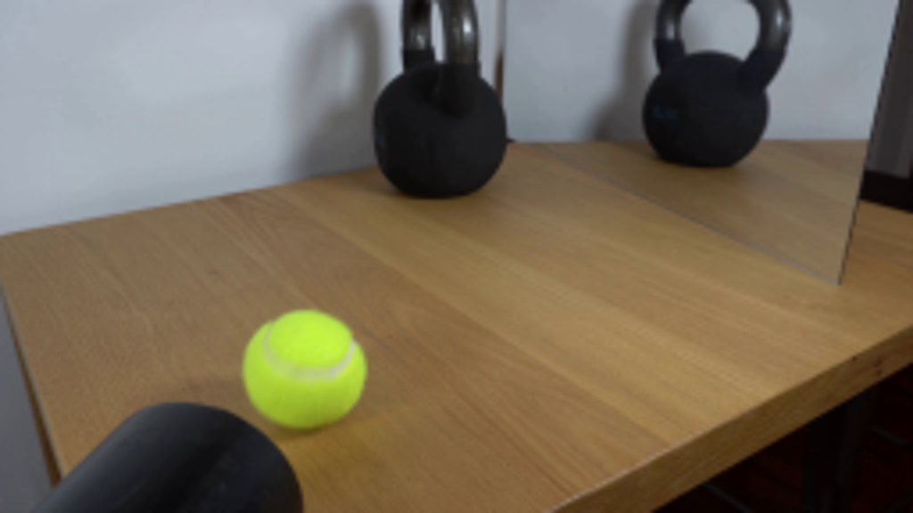
视觉工具实际返回图片 2
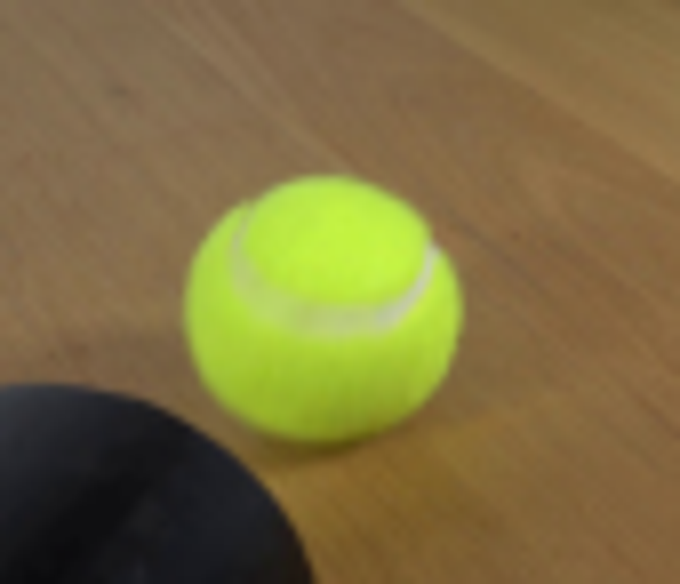
视觉工具实际返回图片 3
视觉工具实际返回图片 4
视觉工具实际返回图片 5
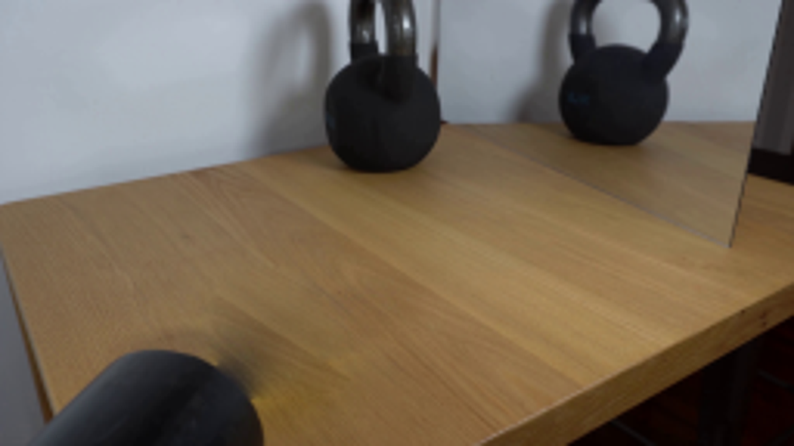
视觉工具实际返回图片 6

视觉工具实际返回图片 7
视觉工具实际返回图片 8
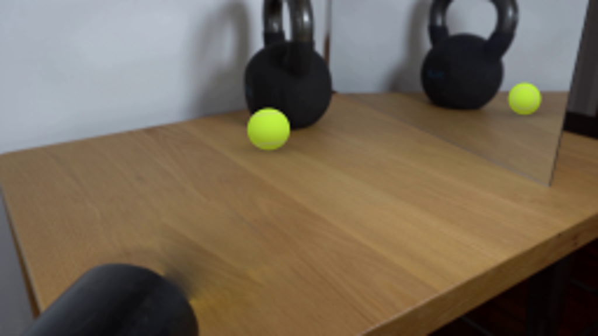
视觉工具实际返回图片 9
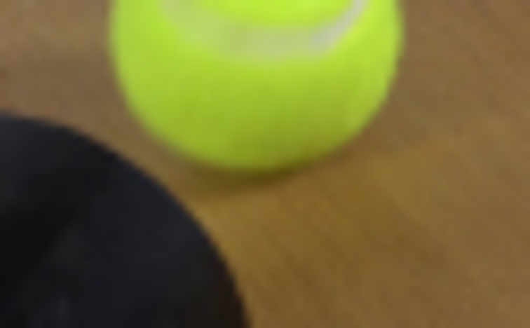
视觉工具实际返回图片 10

视觉工具实际返回图片 11
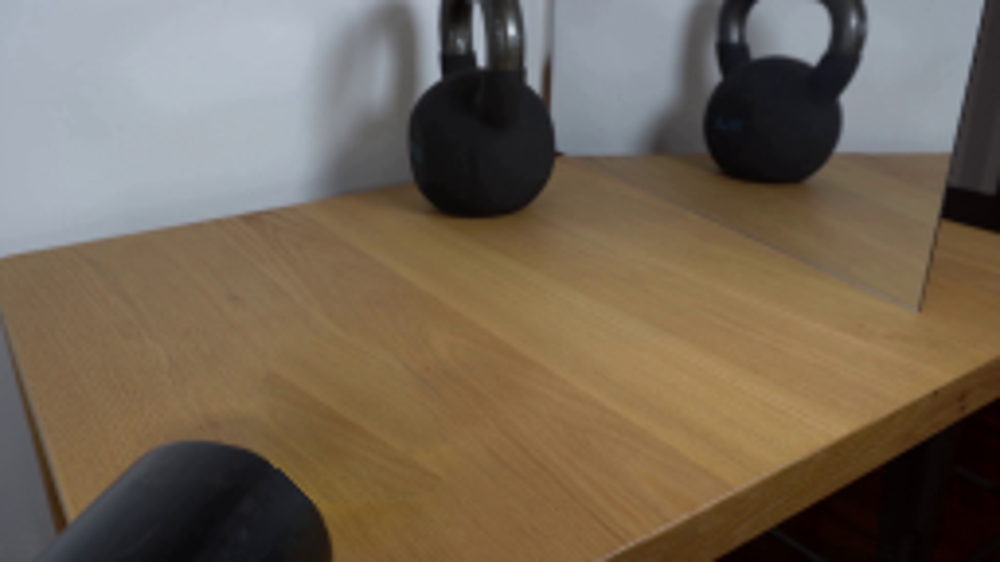
视觉工具实际返回图片 12
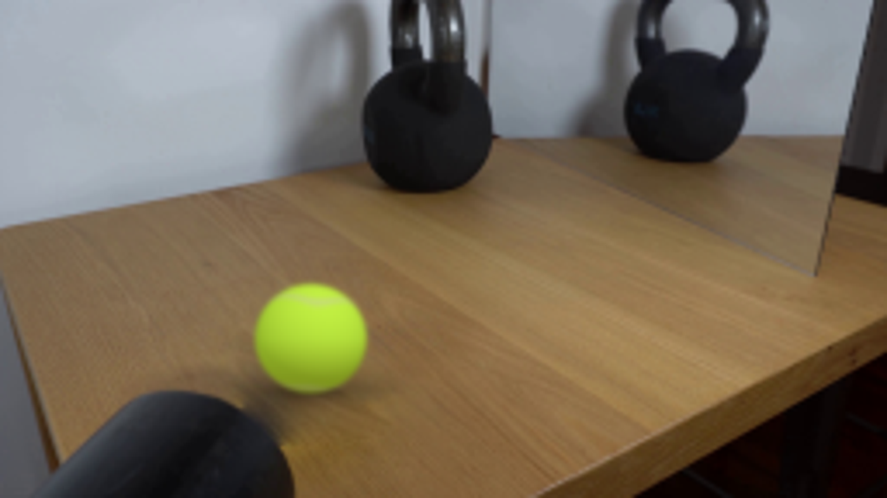
视觉工具实际返回图片 13
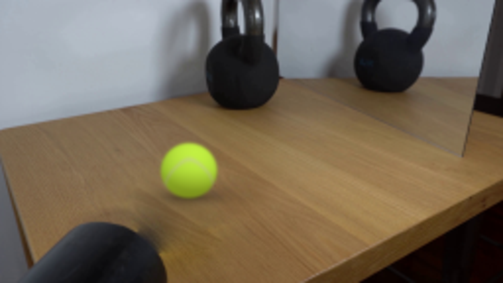
保存候选 4 份；完成命令 21 次；可验证图片返回 13 张。原始 API 响应与完整日志保留在本地。